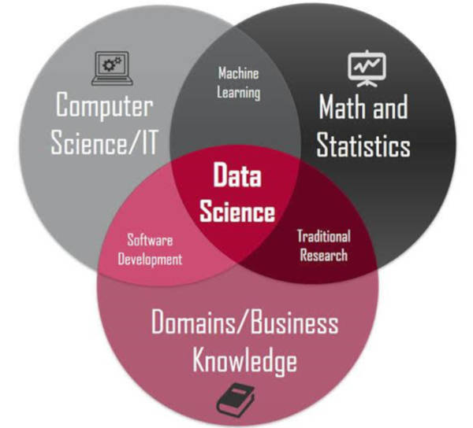

Chapter 2 What is this thing called data science?
2.1 Standard definition

- Source: https://www.kdnuggets.com/2020/08/top-10-lists-data-science.html
- The intersection of computer science/software engineering, statistics, and “business knowledge”
- But this focuses on tools and techniques, not the epistemic and practical goals of data science
2.2 Wait, what’s “data”?
- Representational view: data are “reliable representations of reality which are produced via the interaction between humans and the world”
- “the production of data is equivalent to ‘capturing’ features of the world that can be used for systematic study”
- “data as ‘raw’ products of research, which are as close as it gets to unmediated knowledge of reality”
- data provide “an objective foundation for the acquisition of knowledge” (Leonelli 2020)
- data become data when they’re produced according to a standardized measurement process
- Relational view: “data are objects that are treated as potential or actual evidence for scientific claims in ways that can, at least in principle, be scrutinised and accounted for”
- “any object can be used as a datum, or stop being used as such, depending on the circumstances”
- data become data when they’re used as evidence (Leonelli 2020)
- Note implications for ideas of “unmediated knowledge” and “objective foundation”
2.3 Back to “data science”
- Data science ≠ lab science (often)
- data collection isn’t standardized
- found (or bought), not made
- data as byproduct
- ex: scraping from Twitter, Wikipedia, administrative records
- remixing and recombining data
- ex: pesticide use + Census data in Hicks (2020)
- data first, questions later
- relational view is often a better fit
- data collection isn’t standardized
- The goal of data science is to produce data
- ie, to create and transform objects such that they can be used as evidence
- Can be done experimentally in a lab, but in other ways too
References
Hicks, Daniel J. 2020. “Census Demographics and Chlorpyrifos Use in California’s Central Valley, 2011–15: A Distributional Environmental Justice Analysis.” International Journal of Environmental Research and Public Health 17 (7, 7): 2593. https://doi.org/10.3390/ijerph17072593.
Leonelli, Sabina. 2020. “Scientific Research and Big Data.” In The Stanford Encyclopedia of Philosophy, edited by Edward N. Zalta, Summer 2020. Metaphysics Research Lab, Stanford University. https://plato.stanford.edu/archives/sum2020/entries/science-big-data/.